| 日付 | 2010年12月4日（土） - 2010年12月7日（火） | ||||
|---|---|---|---|---|---|
| 山域 | 九州の山 | ||||
| メンバー | 家族（妻） | ||||
| 山行形態 | 3泊4日ホテル泊 | ||||
| アクセス | 電車、飛行機、車 | ||||
| ルート |
|
新婚旅行で鹿児島に3泊4日で行くことにする。
1日目
鹿児島空港に到着。飛行機は富士山のすぐそばを通り、眼下に富士山の姿がはっきりと見えた。
今日は快晴。空港からは霧島山が見えている。
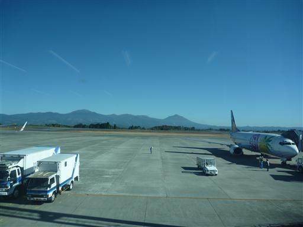
レンタカーを借りて桜島を目指す。
道中にあった黒酢屋に立ち寄る。黒い瓶の中で黒酢を作っているようだ。
併設されている黒酢を使った料理のレストランで昼食休憩をとる。
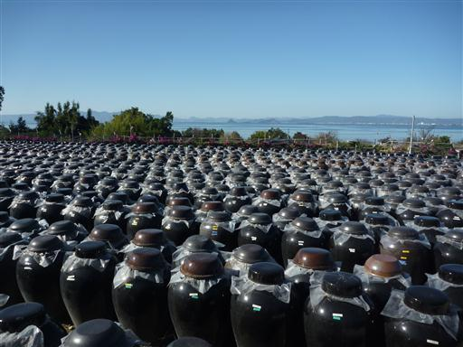
店内には今年の桜島が噴火したときの写真が展示されている。
ここ最近桜島の活動は活発だ。
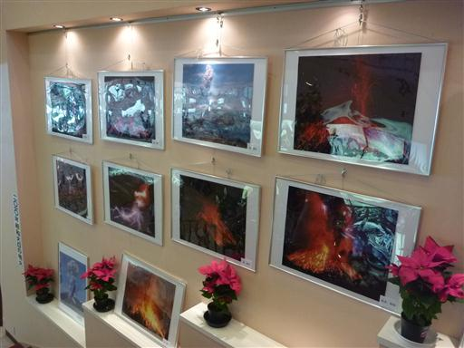
南下していくと桜島にどんどん近づいてくる。思った以上に大きな山だ。
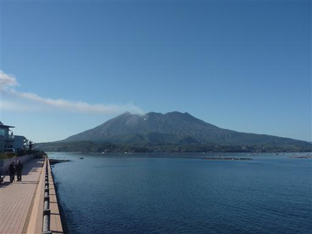
しばらく見ていると突然煙を吐き出し始める。
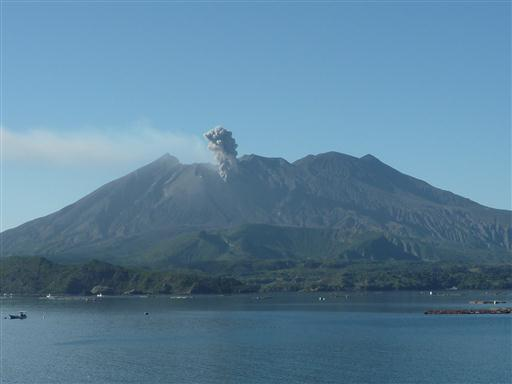
桜島に上陸。寂れた展望台に立ち寄る。
山からかなり近い場所なので、山肌の襞までよく見える。
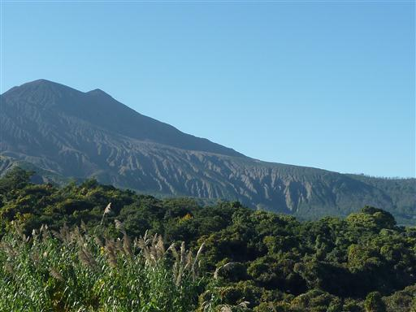
展望台の傍には土に埋もれた鳥居がある。
この辺りに噴火によって埋もれた鳥居があるらしいが、どうもこれではないようだ。
この鳥居も埋もれたのか、ただのレプリカなのか、謎だ…。
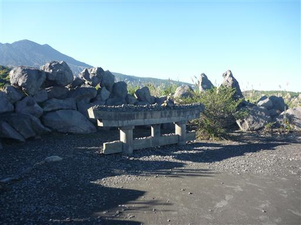
ここでも大きな噴煙を上げ始める。
小石がばらばらと落ちる音がここまで聞こえてくる。
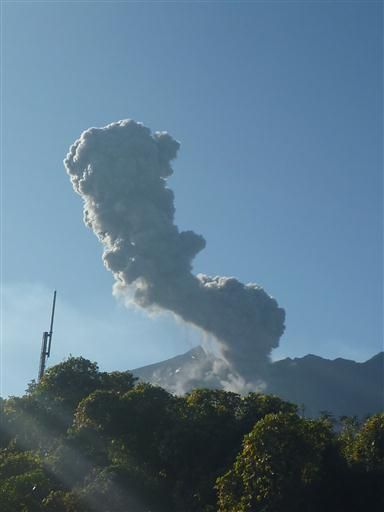
黒神埋没鳥居に到着。こちらが本物だ。
1914年の大噴火で埋まったもので、噴火の怖ろしさを後世に残すために
このままの状態で残されているそうだ。
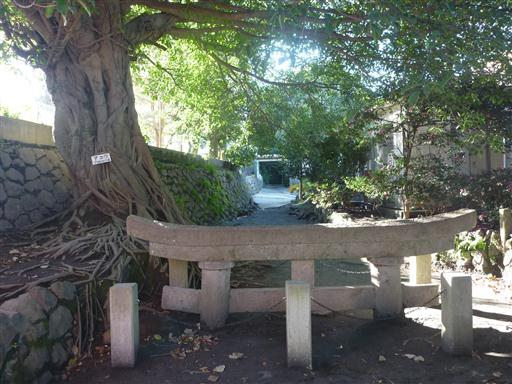
奥には神社がある。こちらは掘り出されたのだろうか？
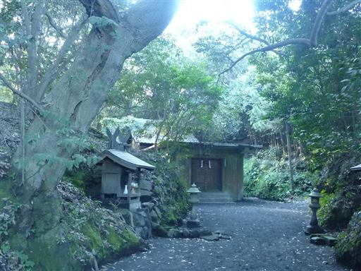
桜島には島をぐるっと一周する道路が取り付けられている。
右回りに1/4周ほどして、有村溶岩展望所に到着する。
車を降りると、空から灰が落ちてきていることに気づく。
手をかざすと点々と黒い灰が付着していき、歩くと目が痛い。
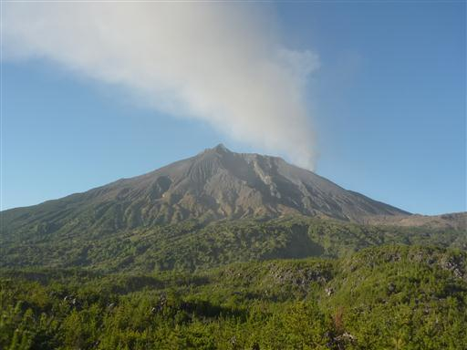
灰は風に流されて南の方角に飛んでいく。風向きが悪かったようだ。
逃げるようにして車に乗り込む。車もいつの間にか灰だらけだ。
ワイパーで掃除するがなかなか取れない。マイカーでなくてよかった。
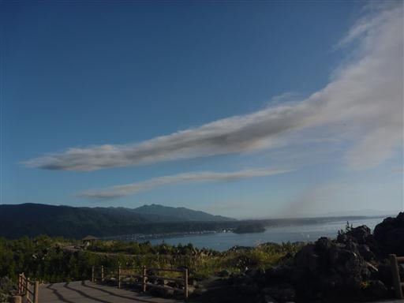
桜島の西側に回り込み、湯之平展望所に到着する。
山頂から最も近い位置にある展望所らしい。
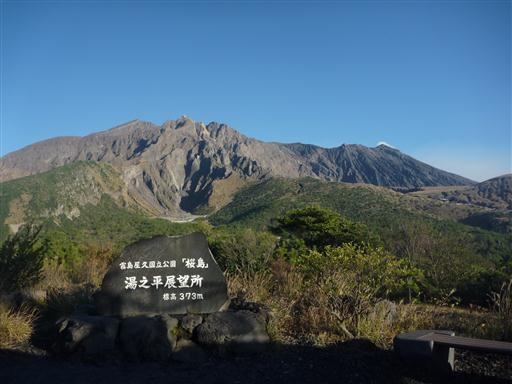
展望台からは海の向こうに鹿児島市内を望むことができる。
平らな台地状の土地から一気に海に陥没している、不思議な地形が広がっている。
解説板によると、鹿児島湾奥部は遥か昔カルデラだったそうだ。
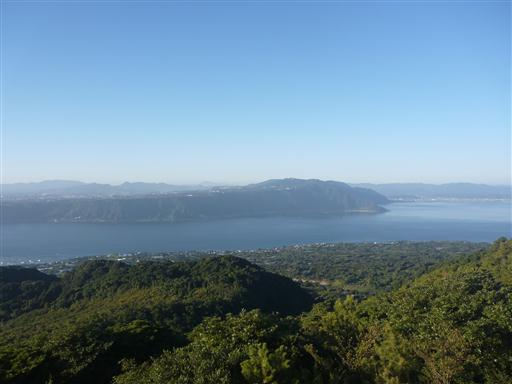
桜島に目をやると、再び噴煙を上げている。
30分に1回くらいの割合で噴煙を上げているようだ。
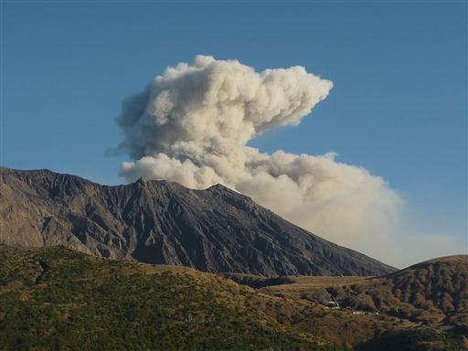
フェリーに乗って鹿児島市内に移動する。
このフェリーは24時間運航らしい。市民の足としてよく使われていそうだ。
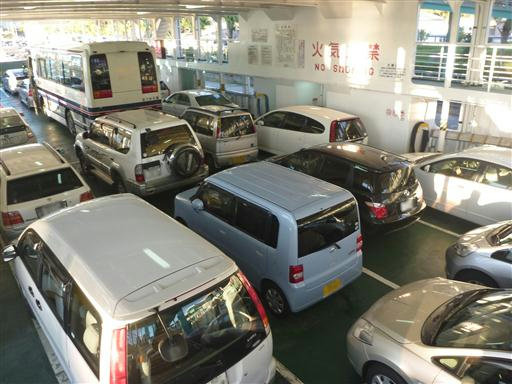
出航。だいぶ日が傾いてきた。
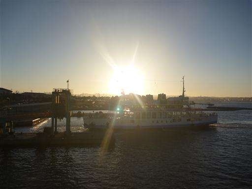
桜島が少しずつ遠ざかっていく。
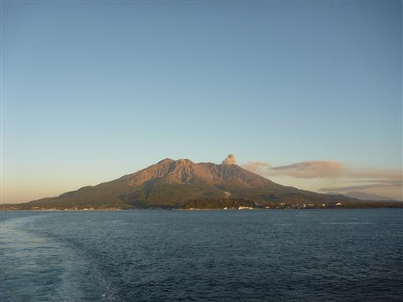
北に目をやると、鹿児島湾の奥には霧島山が浮かんでいる。
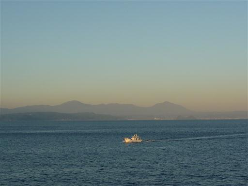
鹿児島市内の真中にあるホテルに到着。
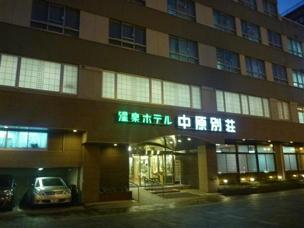
部屋は和室。それほど新しい建物ではないが、きれいにされている。
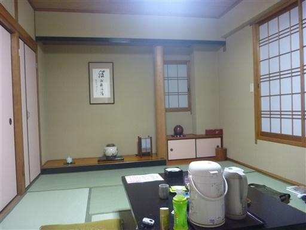
少し鹿児島市内を散策することにする。
人の出はそこそこで、まあまあの盛況といったところだ。
クリスマスシーズンだからか、イルミネーションがあちらこちらでみられる。
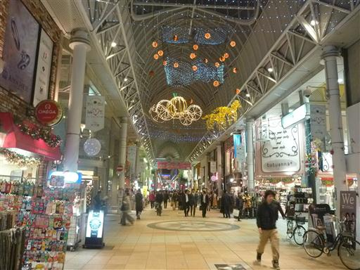
路面電車が走っている。鹿児島にもあったのか。
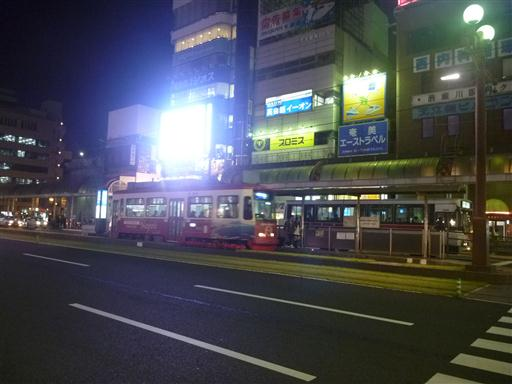
公園の傍に厳めしい建物が建っている。
地図で調べてみると公民館だった。ずいぶんと立派な公民館だ。
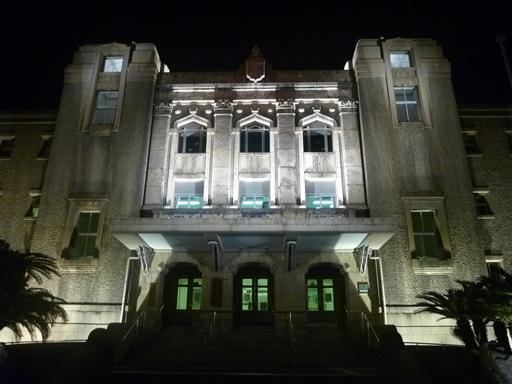
西郷隆盛像。暗闇の中に浮かぶ姿は少々不気味だ。
1時間ほど散策し、ホテルに戻る。
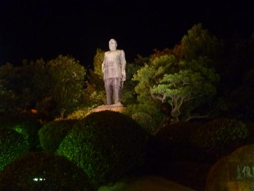